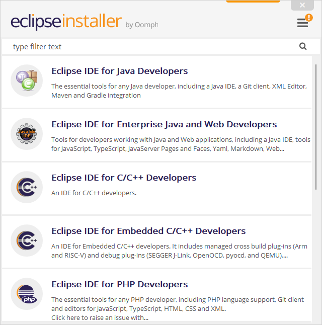
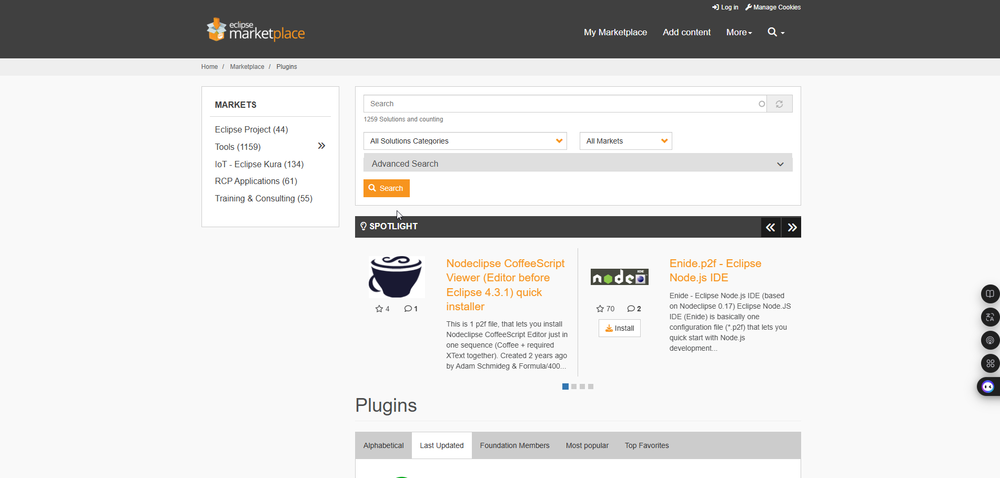

Instalar Eclipse IDE
- Visita https://www.eclipse.org/downloads/
- Descarga “Eclipse IDE for Java Developers”.
- Instala con opciones por defecto.
- Abre Eclipse y configura tu espacio de trabajo.
Installation Video
Instalar Plugins
Para mejorar la experiencia, Eclipse permite añadir plugins. Ejemplo: EGit (para GitHub), Dark Theme, Lombok.
